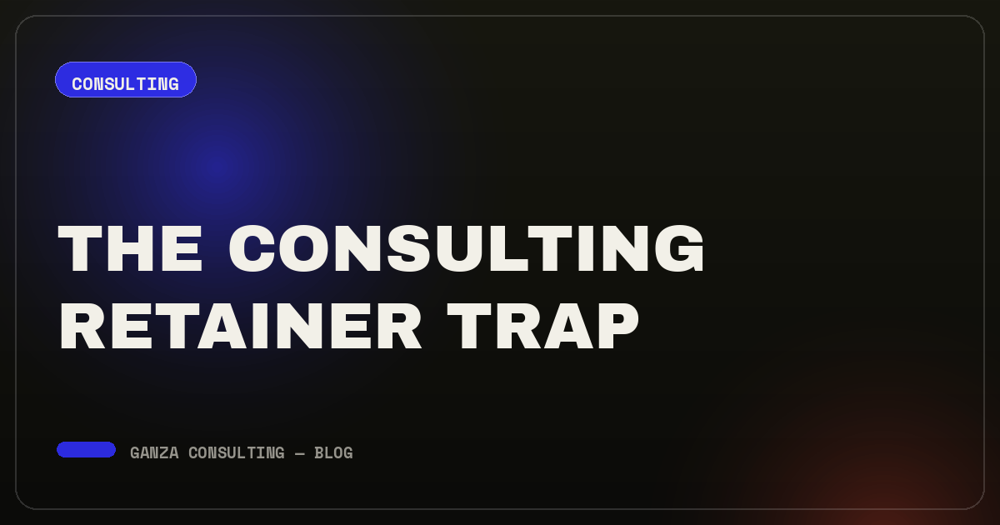
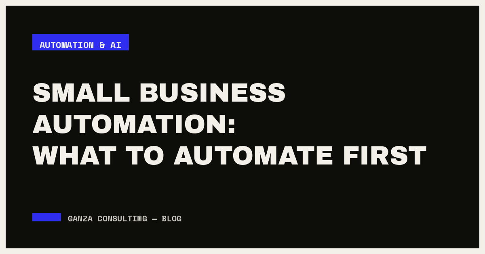
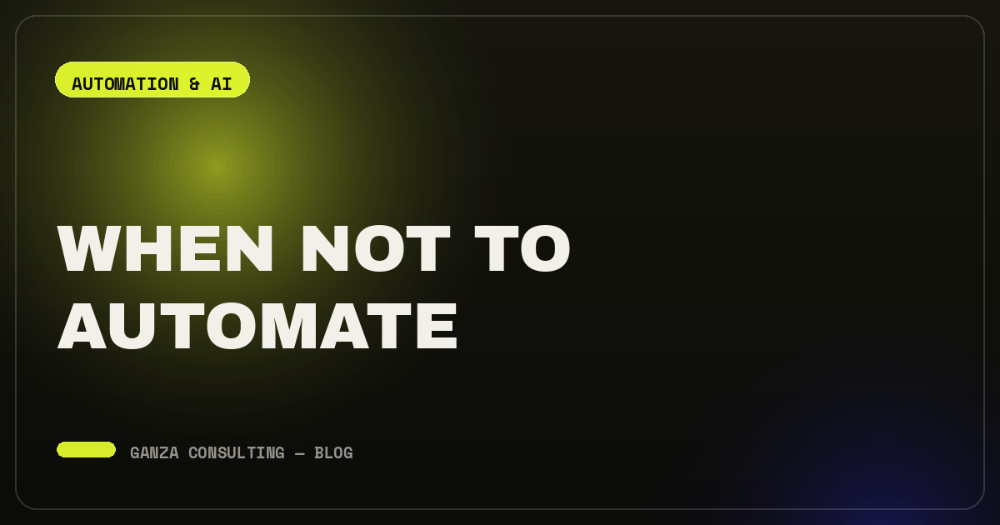
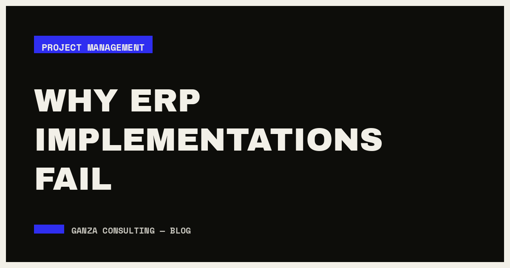
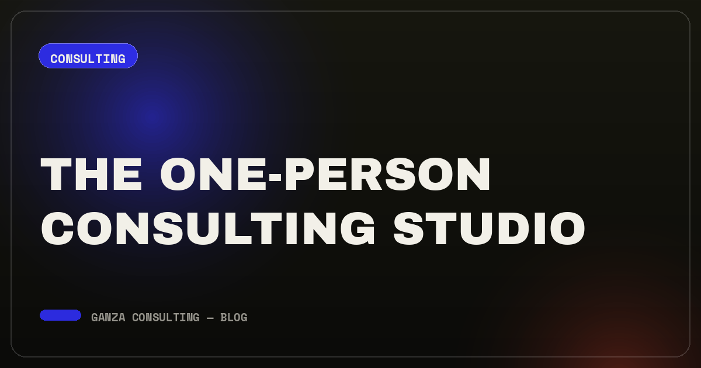
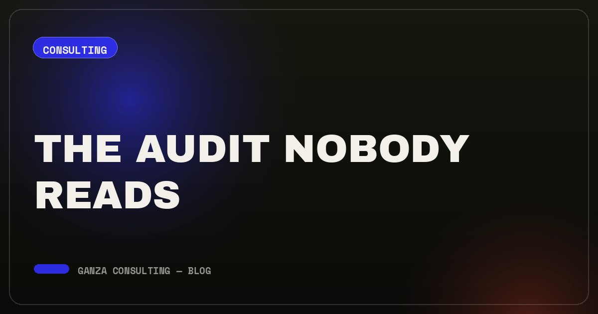
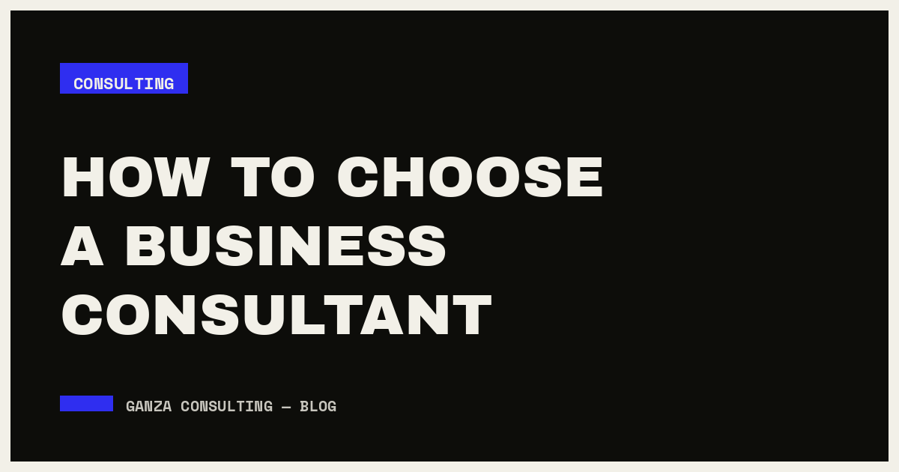
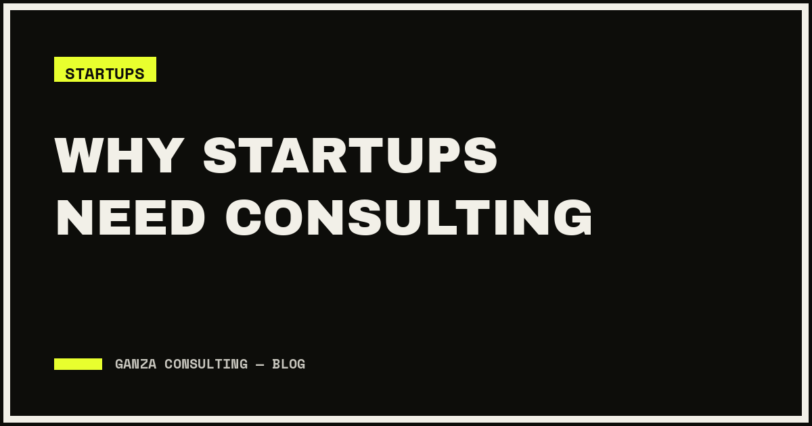
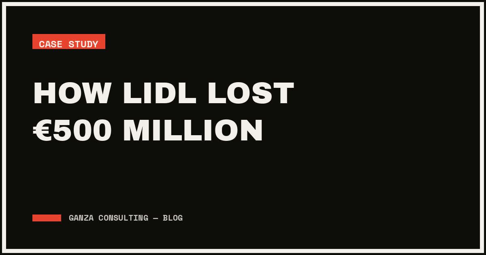
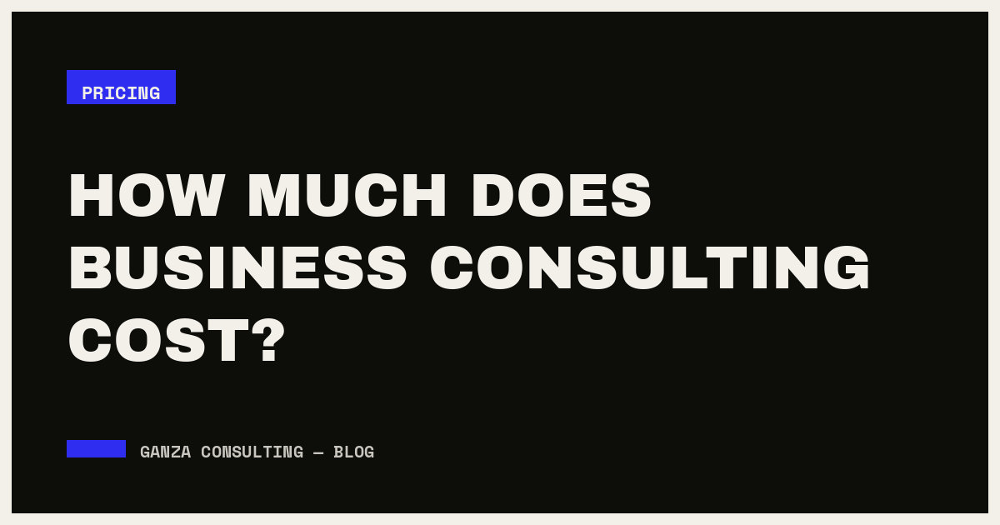

NOTES ON HARD PROBLEMS
Long-form notes on consulting, automation, project management and web development — written by the person who does the work. Every article ends with something you can act on, not a list of things to consider.
12 articles · 113 minutes of reading

The Consulting Retainer Trap: Why Monthly Retainers Rarely Solve Real Problems
A retainer guarantees the consultant gets paid every month. It doesn't guarantee you get a hard problem solved — and the difference compounds quietly.
READ THE ARTICLE →
Small Business Automation: What to Automate First (and What to Leave Alone)
A ranking method that takes twenty minutes, the five automations that reliably pay back for small teams, and the maintenance cost nobody puts in the plan.
READ THE ARTICLE →Why Your Multilingual Website Isn't Converting (It's Not About Translation)
Translation is the easy 20% of localisation. The 80% that decides whether a site converts has almost nothing to do with words.
READ THE ARTICLE →
When Not to Automate: The Hidden Risk of Automating Broken Processes
Automating a broken process doesn't fix it. It makes the broken version run faster, more consistently, and much harder to notice.
READ THE ARTICLE →
Why ERP Implementations Fail: 7 Failure Modes and the Early Signal for Each
The publicly documented disasters share a small number of mechanisms. Each one emits a specific signal months before the write-off — if anyone is watching for it.
READ THE ARTICLE →
The One-Person Consulting Studio: When Small Beats Big (and When It Doesn't)
"What if you get sick?" is the standard objection to hiring a solo consultant. It's a fair question — and it's usually pointed at the wrong risk.
READ THE ARTICLE →
The Audit Nobody Reads: Why Most Business Audits Fail to Drive Change
Most audits are designed to demonstrate thoroughness, not to be acted on. That's a design problem, not an accuracy problem — and it's fixable in the brief.
READ THE ARTICLE →
How to Choose a Business Consultant: 9 Questions That Separate Expertise From a Good Deck
Selection usually fails in the first conversation, not in delivery. These nine questions surface in thirty minutes what a reference call takes weeks to reveal.
READ THE ARTICLE →
Why Startups Need Consulting (Even the Ones That Think They Can't Afford It)
Consulting isn't for companies big enough to afford being slow. It's most useful exactly when you're too small to afford being wrong.
READ THE ARTICLE →
How Lidl Lost €500 Million: A Case Study in Digital Transformation Failure
The eLWIS project didn't fail in a single moment. It drifted for seven years — until keeping it alive cost more than admitting it was dead.
READ THE ARTICLE →
How Much Does Business Consulting Cost in 2026? Rates, Models and What Drives the Number
Published rate ranges are wide enough to be useless on their own. What matters is which pricing model you're buying and which seven factors are actually moving your quote.
READ THE ARTICLE →Infrastructure Inbreeding: Why Promoting Only From Within Puts Your Company at Risk
Universities have a name for hiring only their own graduates. Most companies have the same problem — they just don't have a name for it, so nobody manages it.
READ THE ARTICLE →